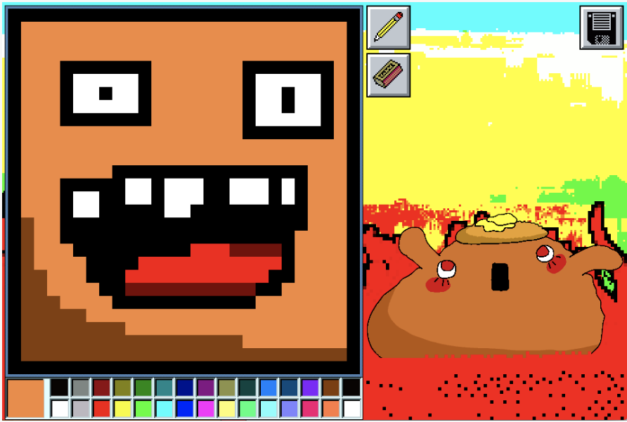
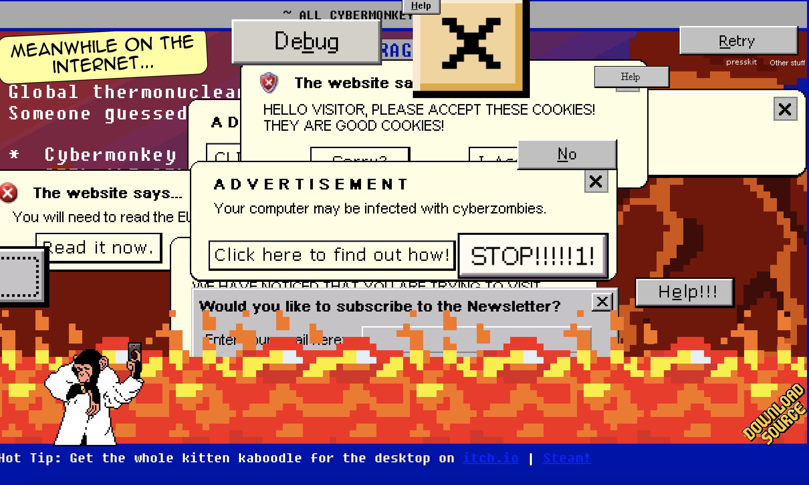
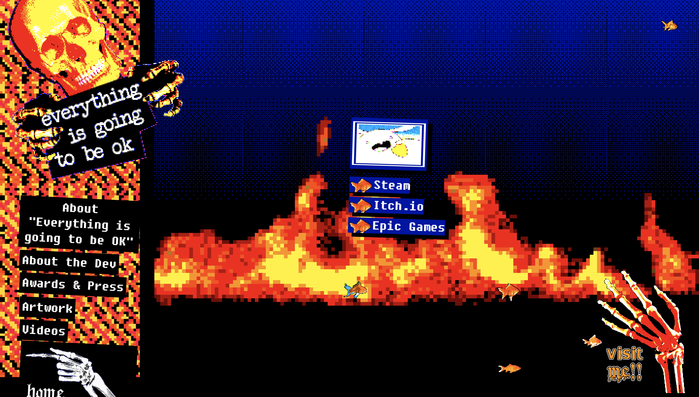
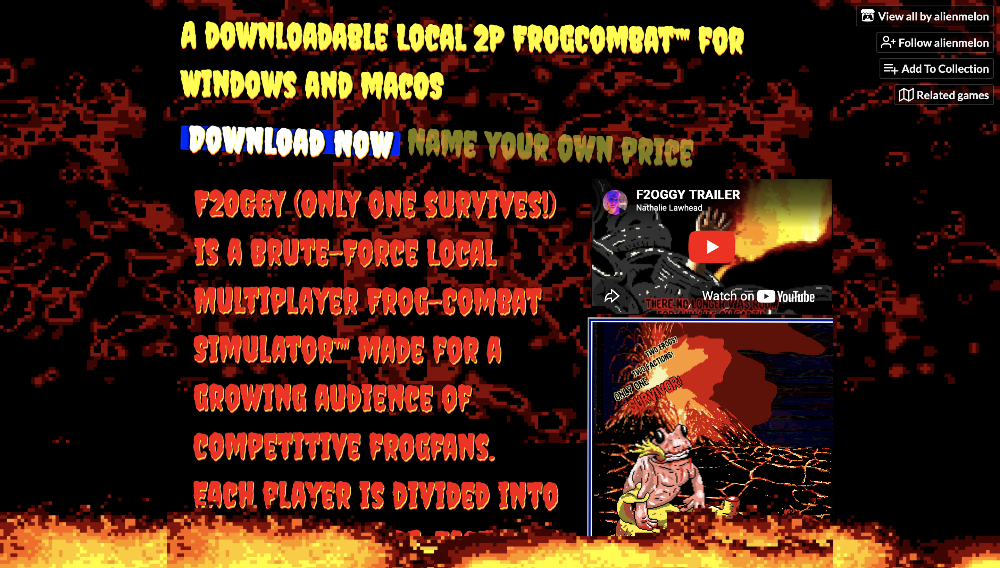
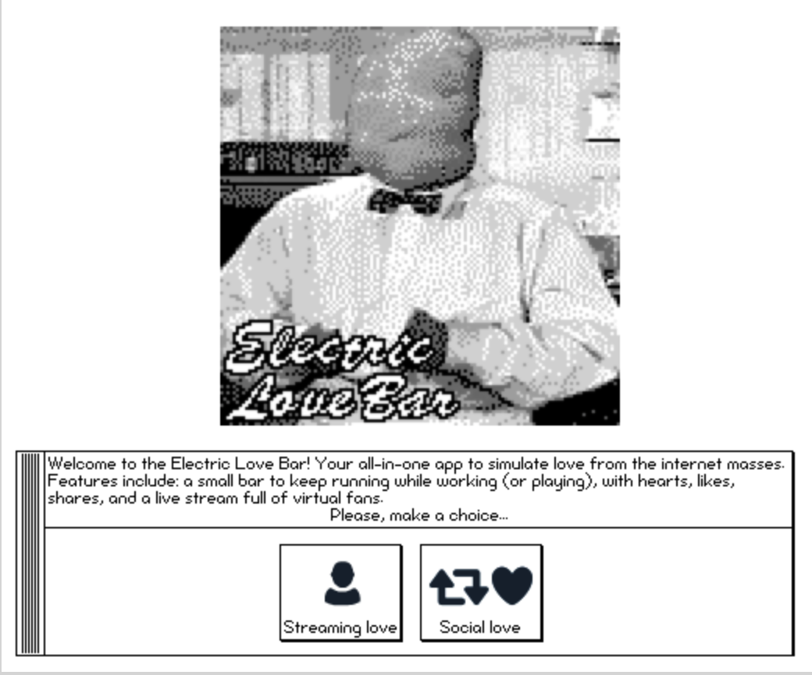

Nathalie Lawhead

Bio
Nathalie Lawhead is a digital artist and independent game developer recognized for creating unusual interactive experiences that combine internet art, storytelling, and experimental game design. Their work first became popular in the late 1990s through online projects that mixed poetry, HTML design, and animation into immersive digital spaces. One of their most important early creations was Blue Suburbia, a collaborative project made with their mother that became influential within early internet art communities. Much of Lawhead’s work focuses on themes such as the instability of technology, the disappearance of online spaces, and the emotional impact of digital culture.Through their creative and experimental style, Lawhead has become an important figure in both net art and independent gaming culture.
Characteristics of Work: Thought provoking, game-like, distorted graphics
Lawhead’s work features an early 2000s internet-inspired aesthetic and unconventional interactive design. Their projects feature glitchy visuals, overlapping windows, pixel art, bright colors, and interfaces that resemble early web pages and computer systems. Their games and digital art stray away from traditional game structures. Their work encourages exploration and emotional reflection. Many of their projects blur the boundaries between poetry, art, and video games. This creates interactions that feel personal and more immersive. Lawhead also explores themes of nostalgia, digital decay, mental health, and online identity, using interactive media to reflect the fleeting and constantly changing nature of internet culture.
Projects and Websites by the Artist (click)



